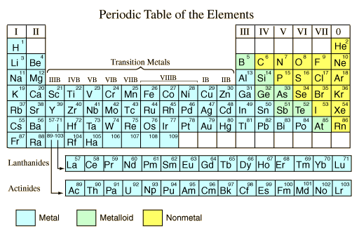

Metals and Nonmetals
As shown on the periodic table of the elements below, the majority of the chemical elements in pure form are classified as metals. It seems appropriate to describe what is meant by "metal" in general terms. This general description is adapted from Shipman, et al.
| Chemical Properties |
| Metals | Nonmetals |
|
|
|
| Physical Properties |
| Metals | Nonmetals |
- Good electrical conductors and heat conductors.
- Malleable - can be beaten into thin sheets.
- Ductile - can be stretched into wire.
- Possess metallic luster.
- Opaque as thin sheet.
- Solid at room temperature (except Hg).
|
- Poor conductors of heat and electricity.
- Brittle - if a solid.
- Nonductile.
- Do not possess metallic luster.
- Transparent as a thin sheet.
- Solids, liquids or gases at room temperature.
|

|
Index
Chemical concepts
Chemistry of the Elements
Electron Affinities
Reference
Shipman, Wilson, Todd
Ch 12 |